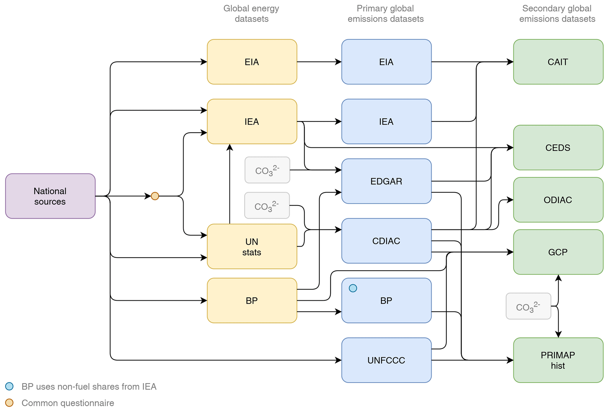

It might appear surprising but there exists no complete and regularly updated global emissions dataset which covers the greenhouse gases needed to run a simple climate model or to answer the question what are global emissions levels currently at with confidence. Usually, each time a new combination of source datasets has to be assembled. Depending on approach the values might differ significantly.
IPCC AR6 WGIII reported 59 Gt CO₂-eq in 2019, the Indicators of Global Climate Change 2022 paper (Forster et al. 2023) used some different data sources and updated landuse data and reported 55 Gt CO₂-eq. The Climate Action Tracker had 52.3 Gt CO₂-eq for 2019 in its November 2022 update.
Some of the differences can be explained by different choice of dataset but the decision which dataset to use sometimes appear arbitrary. In the Indicators of Global Climate Change 2022 paper, an update to the data published in the IPCC’s AR6 report, the authors pick different data sources:
We also use the same type of data sources but make important changes to the specific selection of data sources to further improve the quality of the data, as suggested in the knowledge gap discussion of the WGIII report (Dhakal et al., 2022). Instead of using EDGAR data (which are now available as version 7), we use GCB data for CO2-FFI, PRIMAP-hist data for CH4 and N2O, and atmospheric concentrations with best-estimate lifetimes for UNFCCC F-gas emissions (Hodnebrog et al., 2020). As in AR6 WGIII we use GCB for net CO2-LULUCF emissions, taking the average of three bookkeeping models.
They give the reason for their choices as follows:
There are three reasons for these specific data choices. First, national greenhouse gas emissions inventories tend to use improved, higher-tier methods for estimating emissions fluxes than global inventories such as EDGAR or CEDS (Dhakal et al., 2022; Minx et al., 2021). As GCB and PRIMAP-hist integrate the most recent national inventory submissions to the UNFCCC, selecting these databases makes best use of country-level improvements in data-gathering infrastructures.
If the suggestion to use more data from national inventories can be inferred from the Knowledge Gaps section in the IPCC WGIII Chapter 2 discussion, why wasn’t it already used in AR6? The data sources used in the IGCC report were available then as well.
Given the number of datasets there are other combinations possible. A recent paper on National contributions to climate change due to historical emissions, with quite some overlap of authors with the IGCC paper, prefers third-party reported data which lie in the middle of other estimates:
As discussed above, Minx et al. (ref. 64) compared available estimates of CH4 and N2O emissions and found that PRIMAP-hist (TP scenario) lies centrally amongst those estimates. […] Hence, we note that the CH4 and N2O emissions estimates used in the current study lie centrally within a large uncertainty range globally and within a poorly constrained uncertainty range on national scales.
[a] variety of sources exist for determining global and regional GHG and other climate forcing agent trends. Each source has its strengths and weaknesses and uncertainties.
For its assessment it appears to have used EDGAR and CDIAC. Then, AR5 used versions of IEA and EDGAR data (Krey et al. 2014).
It is hard to disentangle changes over time and to understand differences between studies if different datasets are used every time. The detailed review of CO₂ datasets by Andrew (2020b) found that differences between datasets to a large part come down to different system boundaries, the inclusion or omission of sources. It also included a call for an Intercomparison Project:
Given the inconsistent system boundaries across emissions datasets, one could conceive of a “carbon emissions dataset intercomparison project”, or CEDIP, along the lines of the Coupled Model Intercomparison Project (CMIP) and other related model comparison projects. A core part of these intercomparison projects is the requirement that participants report model outputs to a specified and very clear template such that the issue of system boundary differences is removed. For example, an estimate for global total CO2 emissions could not be reported for a dataset if it excluded sources or countries. In effect, a CEDIP would extend the work done in this article, allowing each data provider to submit according to their superior understanding of their own datasets, permitting more robust comparison, and, critically, allowing lessons to be gained such that estimates can be improved.
In the reply to Reviewer #1 Robbie Andrew wrote:
Page 40 line 637: Would a recommendation to data producers be to make their methodology and data sources more transparent to allow for better understanding?
The difficulty I have here is what concrete suggestions can be made for doing this. I know that different groups have thought a lot about how to transparently and comprehensively document methods and sources, but still we come up with a lot of missing and obscured information. I tend to think this is almost unsolvable. While it might be thought that the best approach might be to have a standard format, the methods differ quite substantially such that it’s not necessarily straightforward to report them in the same way.
Getting data providers to agree on a common format is definitely a challenge and releasing or cleaning up data pipelines is not a priority for researchers in the current academic system.
Another issue is the interdependence of datasets, which makes it hard to assess uncertainty from differences between datasets. From the same study the construction and relationships of CO₂ emissions datasets is shown below.

Figure 1 from Andrew (2020b) shows interrelation and build-up of different CO₂ datasets, see original study for detailed caption (CC-BY)
Community projects
There exist a number of emissions data projects who already have elements of community projects. Even open peer review and working in public can improve the process and signal openness to outside contributors.
The Global Carbon Budget, an annually published report which is part of the Global Carbon Project is something to look into when thinking on how to produce datasets from the community (Friedlingstein et al. 2022). While there are many co-authors collaborating only a small number is directly working on fossil and land-use emissions, as other area of the Carbon Cycle are also covered in the paper. In any case, the lack of direct funding has been a persistent problem:
The work we do in @gcarbonproject has zero direct funding, we have to align with other project activities to cover costs. Yet, we persist in updating annually.
These seem to be standard issues for anyone working on data.
The Global Carbon Budget is widely used, but covers only CO₂. The PRIMAP-hist dataset covers all Kyoto greenhouse gases (Gütschow et al. 2016) but doesn’t include emissions from international aviation and shipping. Emissions from land-use are not included in the main file but only in a separate file and come with a caveat since “they are constructed from different sources using different methodologies and are not harmonized” (Gütschow and Pflüger 2023).
In a comment on the announcement postMika Pflüger mentioned the potentially collaborative setup for doing the hard work of freeing data submitted to the UN from PDFs and the challenges with storing larger data on GitHub. Code and data can be found in their GIN server.
The Community Emissions Data System (CEDS) for Historical Emissions (Hoesly et al. 2018) covers a different subset of species and is probably the most open of the emission products . The code on GitHub is available and only some input data from the IEA is missing to make this fully reproducible. However, long-term sustainability has been a question as well from Reviewer #1:
An outline of long-term plans for the CEDS database is needed in the summary section to build confidence in its sustainability. Modelers would like to know if they can rely on the CEDS system working even after CMIP6. What are the plans for maintenance of the back-end software, frequency of updates to the input data and for maintaining funding for CEDS?
The MATCH (Ad-hoc group for the modelling and assessment of contributions to climate change) working group is quite interesting in this context. As part of UNFCCC negotiations Brazil proposed in 1997
to set differentiated emissions reduction targets for Parties according to the impact of their historic emissions on temperature rise (document FCCC/AGBM/1997/MISC.1/Add.3).
From the expert meetings an open group of voluntary contributors emerged, who published several papers, including assessments of historical emissions, supported by governments who funded travel and administrative support. It could be instructive to learn more from the history of this project (and how to prevent results getting lost when domains aren’t renewed anymore.)
What are the challenges for having an emissions dataset intercomparison project? Have any proposals already be written? How can we get a regularly updated dataset of the inputs required to run a simple climate model? Do we need something like the Global Carbon Project for all greenhouse gases?
We have put a lot of effort into understanding the variation in fossil CO₂ emissions, but what about other GHG emissions?
I would say we have some work to do… We need a @gcarbonproject covering all GHG emissions! https://essd.copernicus.org/articles/13/5213/2021/
Yes please. Not having one single authoritative dataset for non-CO2 emissions makes running an emissions-based simple climate model particularly difficult🙃
———. 2020b. “A Comparison of Estimates of Global Carbon Dioxide Emissions from Fossil Carbon Sources.”Earth System Science Data 12 (2): 1437–65. https://doi.org/10.5194/essd-12-1437-2020.
Forster, Piers M., Christopher J. Smith, Tristram Walsh, William F. Lamb, Robin Lamboll, Mathias Hauser, Aurélien Ribes, et al. 2023. “Indicators of Global Climate Change 2022: Annual Update of Large-Scale Indicators of the State of the Climate System and Human Influence.”Earth System Science Data 15 (6): 2295–2327. https://doi.org/10.5194/essd-15-2295-2023.
Friedlingstein, Pierre, Michael O’Sullivan, Matthew W. Jones, Robbie M. Andrew, Luke Gregor, Judith Hauck, Corinne Le Quéré, et al. 2022. “Global Carbon Budget 2022.”Earth System Science Data 14 (11): 4811–4900. https://doi.org/10.5194/essd-14-4811-2022.
Gütschow, Johannes, M. Louise Jeffery, Robert Gieseke, Ronja Gebel, David Stevens, Mario Krapp, and Marcia Rocha. 2016. “The PRIMAP-hist National Historical Emissions Time Series.”Earth System Science Data 8 (2): 571–603. https://doi.org/10.5194/essd-8-571-2016.
Gütschow, Johannes, and Mika Pflüger. 2023. “The PRIMAP-Hist National Historical Emissions Time Series (1750-2021) V2.4.2.” Zenodo. https://doi.org/10.5281/ZENODO.7727475.
Hoesly, Rachel M., Steven J. Smith, Leyang Feng, Zbigniew Klimont, Greet Janssens-Maenhout, Tyler Pitkanen, Jonathan J. Seibert, et al. 2018. “Historical (17502014) Anthropogenic Emissions of Reactive Gases and Aerosols from the Community Emissions Data System (CEDS).”Geoscientific Model Development 11 (1): 369–408. https://doi.org/10.5194/gmd-11-369-2018.
Jones, Matthew W., Glen P. Peters, Thomas Gasser, Robbie M. Andrew, Clemens Schwingshackl, Johannes Gütschow, Richard A. Houghton, Pierre Friedlingstein, Julia Pongratz, and Corinne Le Quéré. 2023. “National Contributions to Climate Change Due to Historical Emissions of Carbon Dioxide, Methane, and Nitrous Oxide Since 1850.”Scientific Data 10 (1). https://doi.org/10.1038/s41597-023-02041-1.
Krey, Volker, Omar Masera, Geoffrey Blanford, Thomas Bruckner, Roger Cooke, Karen Fisher-Vanden, Helmut Haberl, et al. 2014. “Annex 2-Metrics and Methodology.”
![]()